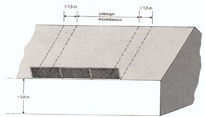

11 |
Verwendung |
| 11.1 | Allgemeines |
| 11.1.1. | Seitenschutz, Randsicherung und Dachschutzwände sind entsprechend der Aufbau- und Verwendungsanleitung des Herstellers zu verwenden. |
| 11.1.2 | Beschädigte Teile dürfen nicht verwendet werden. |
| 11.1.3 | Seitenschutz, Seitenschutzpfosten, Randsicherungspfosten, Schutznetze oder Dachschutzwände dürfen nur an ausreichend tragfähigen Teilen baulicher Anlagen angebracht werden. Diese müssen in der Lage sein, die auftretenden Kräfte aufzunehmen und weiterzuleiten. |
| 11.2 | Dachschutzwände auf geneigten Flächen |
| 11.2.1 | Dachschutzwände dürfen nur auf Flächen mit bis zu 60° Neigung verwendet werden. |
| 11.2.2 | Dachschutzwände auf Flächen mit mehr als 45° Neigung sind so aufzubauen, dass die zu sichernden Arbeitsplätze nicht höher als 5,00 m - in der Lotrechten gemessen - oberhalb der Aufstandskante der Dach-schutzwand liegen. |
| 11.2.3 | Dachschutzwände müssen die zu sichernden Arbeitsplätze seitlich um mindestens 1,0 m überragen (siehe Bild 7). |

| Bild 7: | Zulässiger Arbeitsbereich bei Dachschutzwänden |
| 11.2.4 | Schutzwandhalter müssen in Sicherheitsdachhaken nach DIN EN 517 "Vorgefertigte Zubehörteile für Dacheindeckungen; Sicherheitsdachhaken" eingehängt werden. Bei Verwendung von anderen Befestigungseinrichtungen ist die Gleichwertigkeit nachzuweisen. |